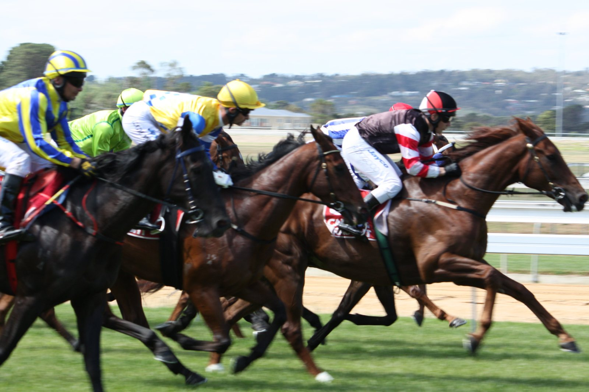

Nakila Sun sale en cabeza y ya no la suelta en la British EBF Final de York
Nakila Sun, preparado por Andrew Balding y montado por Jason Watson, se impuso el viernes en la British EBF £100,000 Final de York tras liderar toda la carrera y ganar por dos cuerpos y medio.

La carrera se decidió en el partidor. El potro de dos años, que salía a 5-1, rompió rápido y tomó la cabeza de inmediato en esta prueba de condiciones sobre siete furlongs, reservada a machos y castrados y dotada con 100.000 libras.
Ya no la soltó. Abrió hueco al acercarse a los dos últimos furlongs y entró completamente solo en el último. Watson apenas tuvo que pedirle en los metros finales para que aguantara con fuerza hasta la meta. Sanbona Warrior, hijo de Ten Sovereigns, fue segundo a dos cuerpos y medio. El crono se paró en 1:29,24 sobre un piso bueno a blando.
Nakila Sun llegaba a York tras ganar en agosto en Windsor por un margen amplio. Suma ahora cuatro salidas, con dos victorias y un segundo puesto, y unas ganancias de 92.237 dólares. Salió de la subasta de yearlings de BBAGS de 2025 por 8.000 euros.
Lleva el sufijo (GER) y es hijo de Torquator Tasso y Navarra Sun (IRE), por Lope De Vega. Lo crió Marianne Pasler y corre para The Pink Hat Racing Partnership. Es el cuarto producto de su madre y el único ganador de ella. Navarra Sun no llegó a correr y es hermana entera de Navarra King, vencedor del Zukunfts-Rennen (Grupo 3). La segunda madre, Navarra Queen, por Singspiel, también ganó un Grupo 3.
El triunfo deja a Andrew Balding ligeramente en cabeza del campeonato británico de preparadores. Desde la cuadra, Anna Lisa Balding rebajó la euforia: «Es un caballito estupendo y estoy encantadísima. Está bien sumar este dinero, pero seamos realistas: todo es un extra, y estar siquiera en cabeza a estas alturas del año es un milagro. Ha hecho un trabajo bastante bueno, ¿no?»
Por Martín Larrañeta